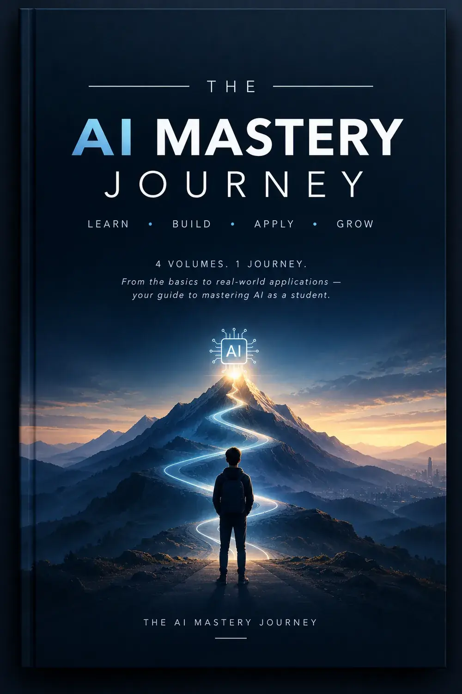
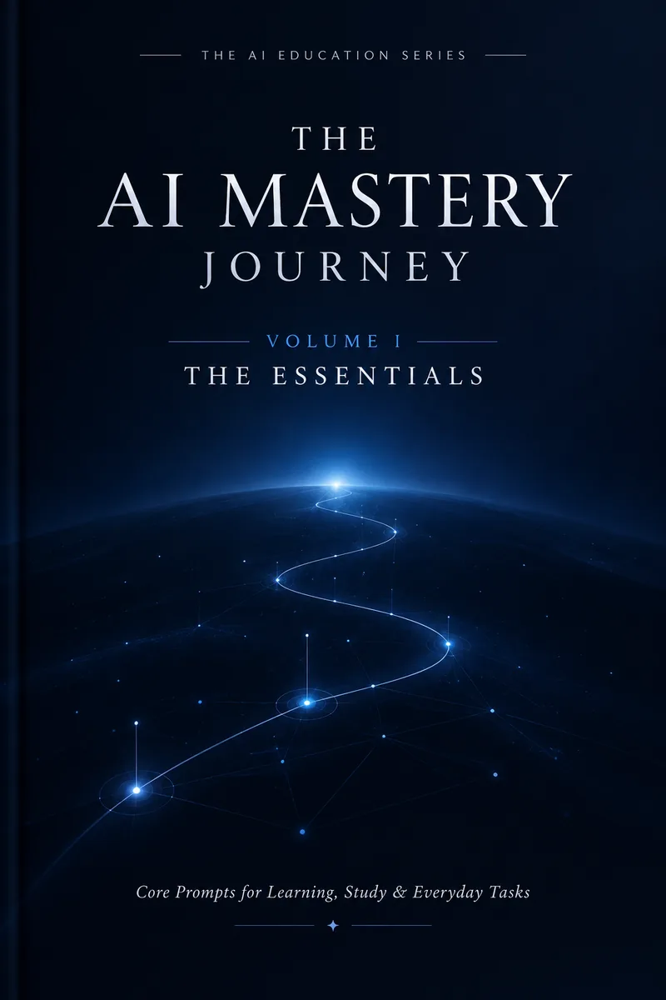
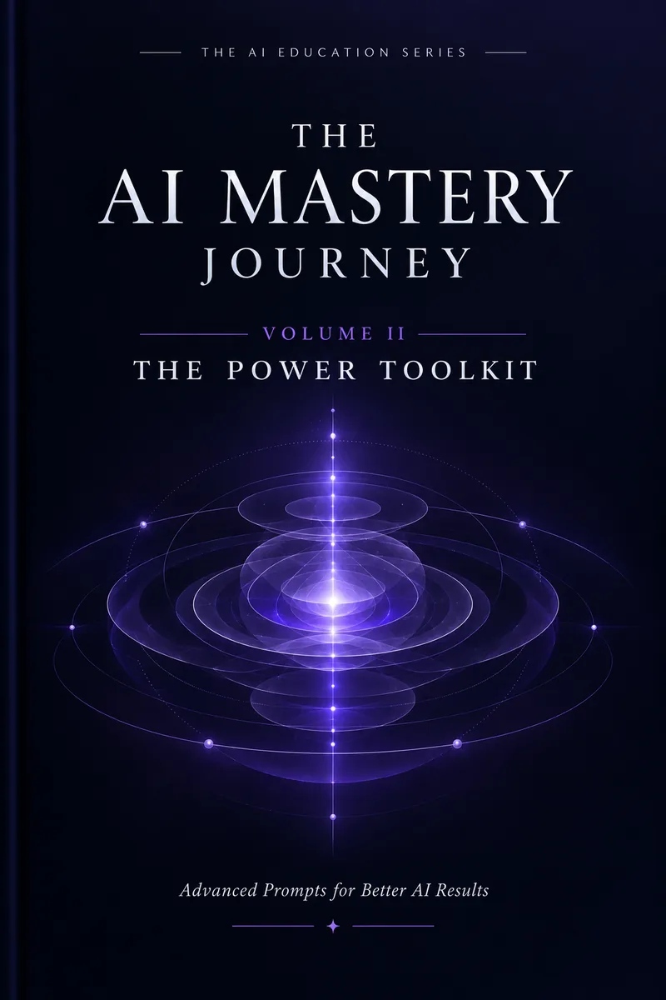
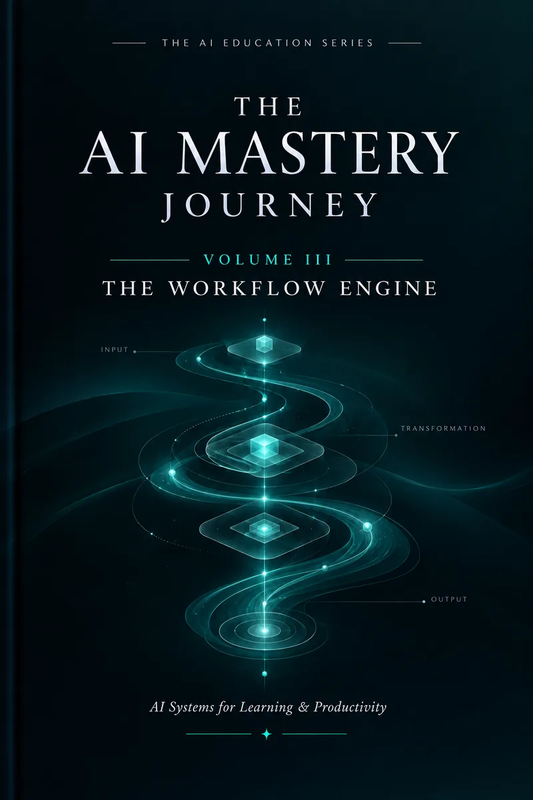
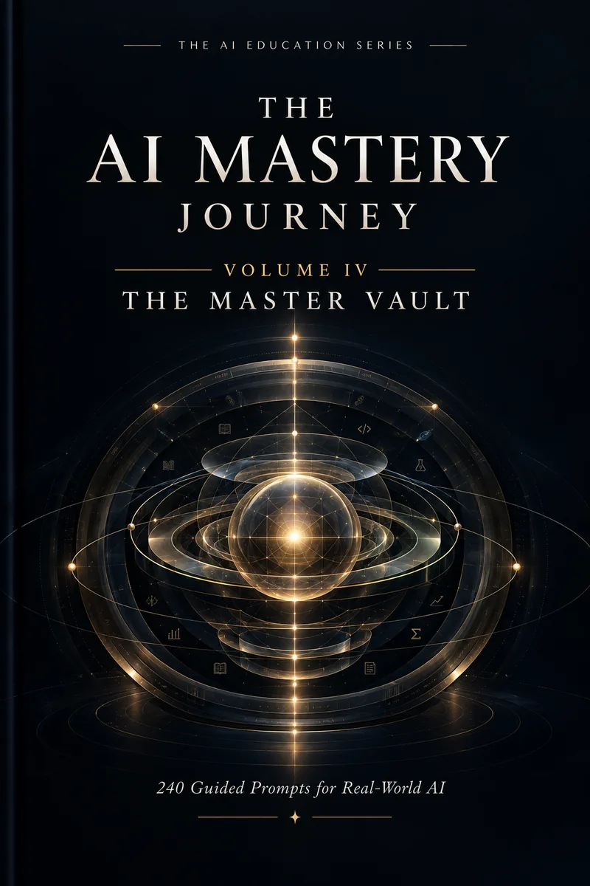

Digital Product / 01
MindFrame
A custom digital workspace built around the way you think, plan and build. Special for students.
Product design
AI workflows
Systems thinking
↗
Digital Product / 01
MindFrame
A custom digital workspace built around the way you think, plan and build. Special for students.
Product design
AI workflows
Systems thinking
↗
A PERSONAL DIGITAL ECOSYSTEM
EST. 2026
THE
NESH
VERSE
.
Ideas. Technology. Things worth building.
An independent technology and creative ecosystem exploring AI, digital products, design, publishing and the ideas connecting them.
FIELD NOTES / 001
2° 11' N · 102° 15' E
N
AI
IDEAS
BUILD
LEARN
ONE PERSON. MANY DIRECTIONS.
001 — ∞
01 / 09
SCROLL TO EXPLORE
↓
AI × CREATIVE SYSTEMS
ARTIFICIAL INTELLIGENCE
✳
TECHNOLOGY
✳
CREATIVE WORK
✳
BUILDING
✳
IDEAS
✳
ARTIFICIAL INTELLIGENCE
✳
TECHNOLOGY
✳
CREATIVE WORK
✳
BUILDING
✳
IDEAS
✳
01 — THE ECOSYSTEM
NOT A PORTFOLIO. A PLACE TO FOLLOW ALONG.
Curiosity, with
somewhere to go.
The Neshverse is a living map of what I’m learning, making and paying attention to. News connects to context. Context connects to experiments. Experiments turn into ideas worth sharing.
Find your way in
01 / STUDIO
Completed work
Products, creative work and systems that are ready to show.
Studio ↗ 02 / PRODUCTSWhat’s in motion
Product direction, product thinking and useful tools.
Products ↗ 03 / LABSExperiments
Prototypes, tools, tests and unfinished ideas.
Labs ↗ 04 / JOURNALNotes and thinking
Reflections, frameworks and things worth understanding.
Journal ↗
02 — THE SIGNAL DESK
A SMALLER, MORE THOUGHTFUL FEED ↗
THE WORLD, WITH CONTEXT
Neshverse News.
A curated window into the developments shaping technology, education and what comes next.
✳
SOURCE
→ STORY
→ CONTEXT DESK / 01
→ STORY
→ CONTEXT DESK / 01
Good information deserves
a little room to breathe.
The signal desk is deliberately selective. When a development earns a place here, it will include the source, the context and a reason it matters — not an endless feed.
SOURCES BEFORE SIGNAL
AI · TECHNOLOGY · STARTUPS · SECURITY · PROGRAMMING · SOFTWARE · HARDWARE · EDUCATION
See what I’m watching
↗
✳
THE EDITORIAL PROMISE
↗
What actually matters.
Not everything that happens needs your attention. The useful part is understanding what changed, why it matters, and what to keep an eye on next.
03 — PATTERNS & POSSIBILITY
A POINT OF VIEW, NOT A PREDICTION
THE ARTIFICIAL INTELLIGENCE WATCH
AI Radar.
Follow the interesting edges of AI. Understand what happened, why it matters, and what’s worth watching next.
FIELD RESEARCH TOOLS AGENTS MODELS RADAR / 001
A RADAR NEEDS REAL SIGNAL.
No unverified
No unverified
blips here.
Each entry will link to a source and make three things clear: what happened, why it matters, and what to watch next. Until then, this is the map — not a claim that something appeared on it.
04 — EXPERIMENTS IN PUBLIC
BUILT, LEARNED, STILL BECOMING
THE WORKBENCH
Build Lab.
Not just finished things. A record of ideas becoming real — and what the process teaches along the way.
Digital Product / 01
MindFrame
A custom digital workspace built around the way you think, plan and build. Special for students.
Product design
AI workflows
Systems thinking
↗
 Digital Product / 02
HireFrame
An AI-powered resume and positioning product built to make early-career applications more coherent and system-aware.
AI product
Resume strategy
UX
↗
Digital Product / 02
HireFrame
An AI-powered resume and positioning product built to make early-career applications more coherent and system-aware.
AI product
Resume strategy
UX
↗
 Creative Work / 03
FRAMEBOUND
Make your memories into a book that you will keep forever.
Creative direction
Typography
Visual identity
↗
Creative Work / 03
FRAMEBOUND
Make your memories into a book that you will keep forever.
Creative direction
Typography
Visual identity
↗
 Creative Work / 04
TECHFEST 2026
A visual identity for TECHFEST 2026 designed to make an event feel clear, energetic and memorable before the doors open.
Graphic design
Typography
Event creative
↗
Creative Work / 04
TECHFEST 2026
A visual identity for TECHFEST 2026 designed to make an event feel clear, energetic and memorable before the doors open.
Graphic design
Typography
Event creative
↗
 Creative Work / 05
AURIX XH1
An advertising-led product visual that gives a piece of hardware a strong and deliberate presence.
Product visual
Typography
Graphic design
↗
Creative Work / 05
AURIX XH1
An advertising-led product visual that gives a piece of hardware a strong and deliberate presence.
Product visual
Typography
Graphic design
↗
 Technology Project / 06
ReviewFlow AI
A practical experiment exploring how AI can support clearer thinking, review loops and structured decision-making.
AI
Web
Automation
↗
Technology Project / 06
ReviewFlow AI
A practical experiment exploring how AI can support clearer thinking, review loops and structured decision-making.
AI
Web
Automation
↗
THE LAB IS ALWAYS OPEN.
More experiments take shape as I learn. Each project page carries the notes, not just the polished result.
05 — LEARN WITH INTENTION
A PRACTICAL SERIES BY NESH
A FOUR-VOLUME LEARNING SERIES
The AI Mastery
Journey.

A progression from useful fundamentals to considered, repeatable workflows — built around learning to work with AI more intentionally.

VOL. I · THE COLLECTION The Essentials A clear foundation for communicating with AI and getting useful results. Price not listed Explore volume ↗
VOL. II · THE COLLECTION The Power Toolkit Practical ways to apply AI across study, creative work and technology tasks. Price not listed Explore volume ↗
VOL. III · THE COLLECTION The Workflow Engine Turn individual prompts into repeatable, multi-step workflows. Price not listed Explore volume ↗
VOL. IV · THE COLLECTION The Master Vault Bring structured AI methods to more complex problems and technical work. Price not listed Explore volume ↗
06 — IN PROGRESS, BY DESIGN
WORK IN
PUBLIC . THE JOURNAL / NOTES
FROM THE FIELD
PUBLIC . THE JOURNAL / NOTES
FROM THE FIELD
LEARNING IN THE OPEN
Still figuring it out.
That’s the point.
I’m learning in public — mapping what I’m building, what I’m observing, and what I’m trying to understand more clearly.
01
Currently learning AI fundamentals, product thinking and the habit of building while learning.
↗
02
Exploring Creative systems, digital products and the ideas connecting them.
↗
03
Taking with me Good questions, thoughtful process and the willingness to iterate.
↗
07 — NOTES FROM THE JOURNEY
THOUGHTS TAKE SHAPE HERE
QUESTIONS, OBSERVATIONS, LEARNINGS
Ideas in progress.
An editorial corner for things I’m thinking through — not the final word, just a useful place to start.
ESSAY / 01
FIELD PERSPECTIVE
Learning by making .
A note on why making something of your own can change the way you learn.
Read reflection ↗
08 — A PERSONAL WATCHLIST
OPINIONATED, NOT OBJECTIVE FORECASTING
THE NEXT FIVE TO TEN YEARS
Future Watch.
A working set of questions about technology that could shape how we live, work and relate to one another. Signals change. So do these views.
NESHAKAR’S WATCHLIST
·
UPDATED AS I LEARN
01
Artificial Intelligence
A fast-moving field with real potential — and real questions about how we choose to use it.
Growing
02
Robotics
The connection between intelligent software and the physical world is worth watching closely.
Emerging
03
Spatial Computing
New ways of placing digital information into our surroundings could reshape interaction.
Emerging
04
Cybersecurity
As more of life moves through connected systems, security remains essential work.
Watch Closely
05
Human–Computer Interaction
The way we work with technology matters as much as what the technology can do.
Growing
06
Quantum Computing
A fascinating research area; practical impact is still a question to keep in perspective.
Emerging
These are personal areas of interest, not investment guidance or claims about certainty. The interesting question is not only “what can this do?” but “what should we do with it?”
09 — A MOMENT IN TIME
RIGHT NOW / 2026
Neshverse Pulse.
CURRENTLY EXPLORING
Artificial
intelligence SEE THE RADAR ↗ CURRENTLY BUILDING The
Neshverse VISIT THE LAB ↗ LATEST PUBLICATION The AI
Mastery Journey MEET THE SERIES ↗ LATEST THOUGHT Learning by
making READ THE NOTE ↗
intelligence SEE THE RADAR ↗ CURRENTLY BUILDING The
Neshverse VISIT THE LAB ↗ LATEST PUBLICATION The AI
Mastery Journey MEET THE SERIES ↗ LATEST THOUGHT Learning by
making READ THE NOTE ↗
A snapshot, not a status report. This little corner changes as I do.
10 — THE HUMAN BEHIND THE TABS
BUILT BY A PERSON, FOR CURIOUS PEOPLE

THE NESHVERSE
Build what matters,
in public.
I created TheNeshVerse as a place for thinking, building and sharing the work that sits between technology, design and creative systems.
It is not a résumé. It is a living ecosystem: a home for products, experiments, publishing, notes and the questions that keep shaping the work.
I build things to understand the world better and to make useful ideas feel tangible. The projects here are the result of that practice — imperfect, evolving, but always grounded in intention.
WHAT IT EXPLORES
- Artificial Intelligence
- Digital Products
- Technology
- Design
- Publishing
- Creative Systems
HOW I WORK
- Build useful things
- Make ideas understandable
- Keep curiosity active
- Finish what matters
Make it useful.
Make it understandable.
Build with intention.
Stay curious.
Finish what matters.